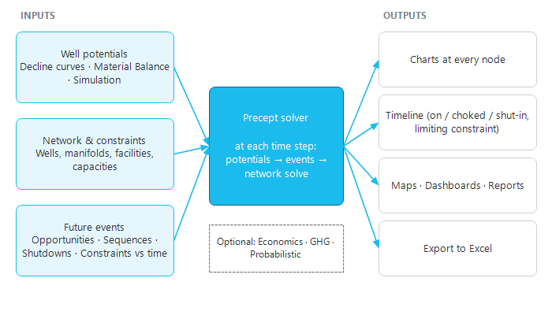
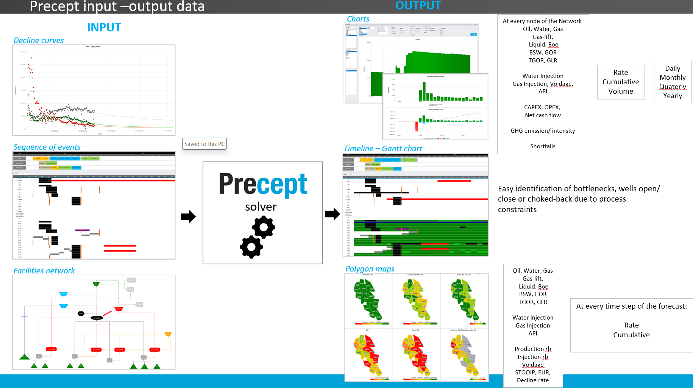

|
|
Introduction to Precept
1. What Precept is
Precept (Cleverfield) is a desktop application for oil and gas production forecasting, field development planning and production surveillance. It lets planners and engineers model an asset quickly, test alternative development options as scenarios, and follow the field day to day, so that time goes into ideas and decisions rather than into building models.
Precept is made of two modules, plus a set of platform tools shared by both:
•Forecast: scenario-based production and injection forecasting (section 2).
•Monitoring: surveillance of the producing asset (section 3).
•Platform: Precept AI, 3D views, coupling with Petex GAP and Prosper, security and multi-user access (section 4).
This document is both the user manual and the technical reference for installing and running Precept. It describes the on-screen names exactly as they appear in the application.
2. The Forecast module
All forecasting work is organised by Asset, Project and Scenario (see Scenario Management). A scenario holds a complete set of inputs; running it produces a forecast that is saved with it, so scenarios can be compared side by side.
To generate a forecast, Precept needs three kinds of input:
•Well potentials: the unconstrained production or injection capacity of each well at every time step. They come from one of three methods, chosen per scenario in "Settings": decline curves (Decline curves), material balance (Material Balance), or a reservoir simulator run in the loop (Simulation coupling).
•The production and injection network and its constraints: wells, manifolds, facilities and export points, with their capacities (Network modelling).
•Future events: new wells and other opportunities, rig and crew sequences, conversions, shutdowns and changes in constraints over time (Opportunities, Sequence of events, Shutdowns, Constraints changes vs time).
At each time step, Precept takes the well potentials, applies the events of that step, and solves the network so that no constraint is exceeded: wells are choked back or shut in where capacity is short. The forecast can be run deterministically, or probabilistically from input distributions (Probabilistic). Optional calculations add OPEX/CAPEX economics (Economical screener) and greenhouse-gas emissions (GHG emission). How the potentials and the network solve interact is explained in Precept philosophy.

Figure 1 - The Forecast workflow: inputs, the time-step solver, and the outputs.
Results can be viewed as charts at every node of the network, as a timeline (which wells are on, choked or shut in, and which constraint is limiting), as polygon maps, as dashboards and reports, or exported to Excel (Forecast results). The picture below summarises the main inputs and outputs.

3. The Monitoring module
The Monitoring module is used to follow the producing asset. It opens from the "Monitoring" group of the main ribbon, with three dashboards: "Asset" (field overview), "Producers" and "Injectors". From these dashboards you reach the surveillance tools, for example well tests, pressure-transient analysis, interwell connectivity (capacitance-resistance model) and the well and gas-lift optimisers. The "Monitoring" group is shown only when the module is part of your licence. See Monitoring.
4. The platform
•Precept AI: a built-in assistant that answers how-to questions, explains results and can change scenario inputs on request (Precept AI). It is available when it has been activated for your company.
•3D: a 3D view of wells and the gathering network, and a 3D reservoir-model builder for simulation decks (3D visualiser, 3D model builder).
•Petex GAP and Prosper coupling: Precept can export its schedule of events to GAP, read the GAP forecast back into the scenario, and update the Prosper well models (Petex GAP / Prosper coupling).
•Security and multi-user work: per-asset access rights, shared or private scenarios, and locked scenarios (Security / Access policy).
Precept works in oilfield or metric units (chosen per scenario in "Settings"). All pressures shown, entered and stored in Precept are gauge pressures.
5. The main window and its ribbon
After start-up, select the asset in the "Select Asset" list, then the "Project:" and the "Scenario:". The main window then shows the scenario's forecast dates, its sequences of events and shut-ins as a timeline, and a summary of field production. The ribbon groups stay greyed out until a scenario is loaded, and some buttons depend on your access rights (see Security / Access policy) or on the options ticked in "Settings".
|
Ribbon group
|
Buttons
|
Purpose
|
|
Manager
|
"Scenario Manager", "Duplicate scenario"
|
Create, duplicate, rename, share, lock, compare and delete scenarios; create assets and projects.
|
|
Monitoring
|
"Asset", "Producers", "Injectors"
|
Open the surveillance dashboards (when licensed).
|
|
Expertise
|
"Network", "Material balance", "Decline Curves", "Opportunities", "New profiles and Conversions", "Shutdowns", "Constraints vs time", "Sequence", "OPEX", "GHG emission", "Export", "Probabilistic distributions", "Troubleshoot"
|
Enter and edit the scenario inputs. "OPEX", "GHG emission" and "Export" appear only when "Calculate Economics", "GHG emission" and "Model Lifting Export" are ticked in "Settings".
|
|
Forecast
|
"Settings", "Deterministic", "Probabilistic", "Gain per opportunity", "Performance"
|
Set the forecast options (time step, units, potentials method, optional calculations) and run the forecast. "Performance" (forecast against actual) appears when "Measure performance" is ticked on the main window.
|
|
Forecast Results
|
"Charts", "Maps", "Export to Excel", "Dashboard", "Generate report", "Material Balance dashboard"
|
View and export the results. "Material Balance dashboard" appears only when the scenario's potentials method is "Material Balance".
|
|
GAP
|
"Update Well model", "Export Schedule to GAP", "Get Forecast from GAP"
|
Use Precept as pre- and post-processor for Petex GAP. Shown when "Pre/Post processor for GAP" is ticked in "Settings".
|
|
3D Modelling
|
"3D model builder", "3D model visualization"
|
Build a reservoir simulation deck and view the model in 3D. Shown when "3D Simulation model" is ticked in "Settings".
|
|
(right-hand group)
|
"Security", "About Precept", "Current Users", "Precept AI", "User Manual", "Connection Checker"
|
Access rights (Super Users), version and "What's new?", the assistant, and this manual. "Current Users" appears with concurrent licences; "Connection Checker" appears when a connection fails at start-up.
|
6. Where to go next
•Installing Precept and how it connects to its databases: Precept Architecture.
•Building a forecast model, step by step: Modelling Oil and Gas Assets.
•Running the forecast and reading the results: Forecast calculations, Forecast results.
•A worked example from an empty asset: Tutorial.
|
|